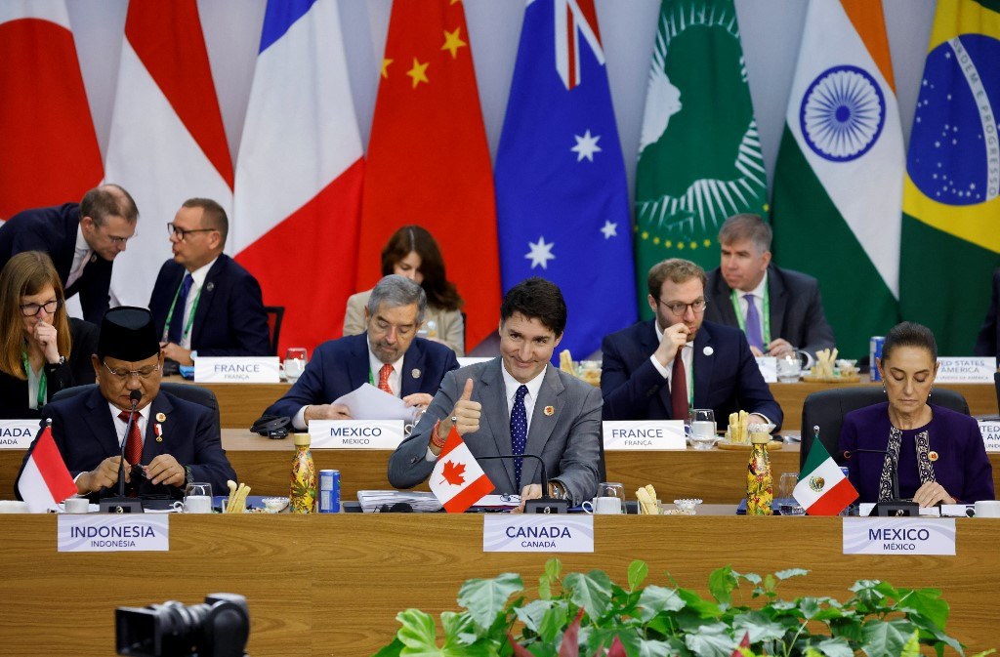
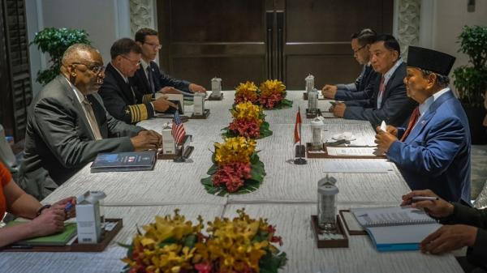
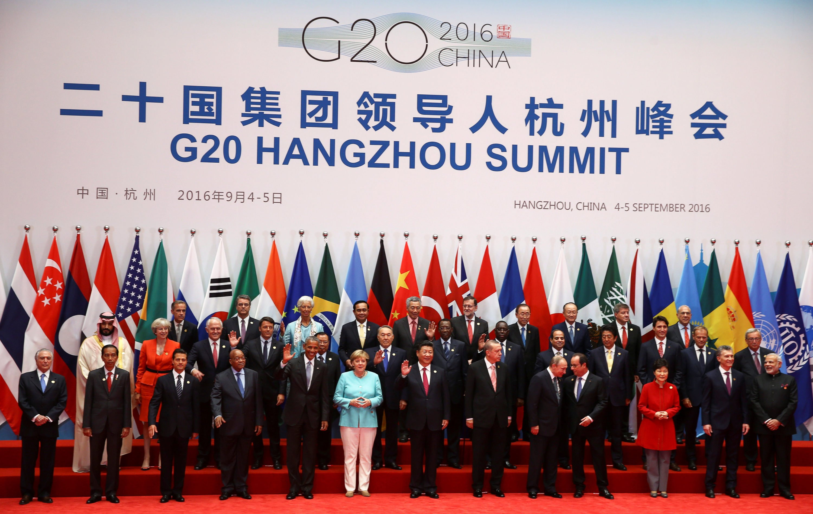
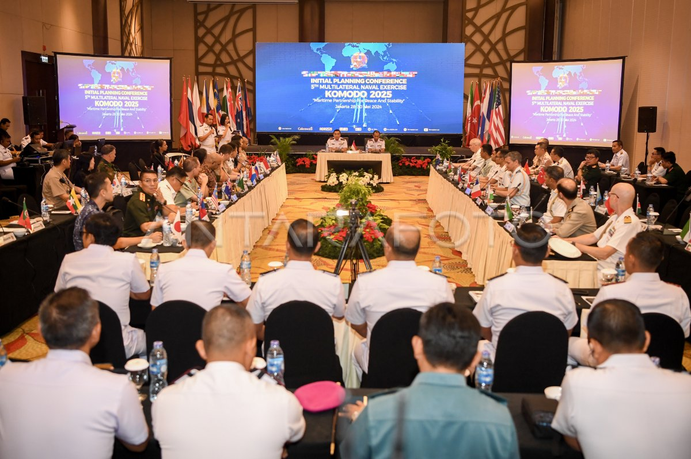

.png)


   
Kerja sama multilateral melibatkan tiga negara atau lebih yang bekerja bersama dalam isu atau kepentingan bersama yang seringkali bersifat global, seperti ekonomi, kesehatan, keamanan, dan lingkungan. Kerja sama ini biasanya difasilitasi oleh organisasi internasional atau forum global.
Contoh dari kerjasama ini : Perserikatan Bangsa-Bangsa (PBB) Indonesia dan Inggris aktif dalam berbagai forum PBB, seperti Dewan Keamanan, UNFCCC (Konferensi Perubahan Iklim), dan inisiatif global lainnya. Keduanya berkolaborasi dalam isu-isu seperti perdamaian, pembangunan berkelanjutan, dan mitigasi perubahan iklim.
1. Kerjasama dalam PBB : Anggota - anggota dalam PBB termasuk UK dan Indonesia bekerjasama dalam agenda global PBB (SDGs) dan juga perubahan iklim. Agenda ini sangat penting tentunya untuk mendukung dan lebih memajukan negara - negara terutama negara berkembang seperti Indonesia.
2. Kerjasama dalam G20 : Isu ekonomi Global dan Pandemi Covid-19 pastinya merupakan hal yang sangat penting sehingga hal itu juga dibahas oleh negara - negara dalam G20 yang mencakup negara - negara dengan ekonomi terbesar di Indonesia dan juga mencakup UK dan Indonesia. Negara - negara tersebut membahas isu - isu global seperti pemulihan ekonomi pasca-pandemi, perubahan iklim, serta kerjasama terkait vaksinasi, dan penguatan sistem kesehatan global.